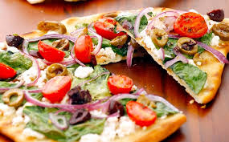

Odin Recipes
Fresh maind naan Greek style Pizza

These ingredients make for a simple yet delicious tasting pizza. The naan
bread makes it simple to take an Italian dish and turn it greek.
How to make the amazing naan pizza
- First, preheat the oven to 400F.
-
Heat a skillet on medium heat with 1 tabelspoon of olive oil. Place your
chicken breasts on the skillet and season up-facing side of chicken with
1 tablespoon of greek seasoning. After 4 minutes of cooking, flip the
chicken and repeat with the seasoning. Cook until internal temperature
of chicken is 165F. Remove from heat, cut into bite sized pieces and set
aside.
-
With your naan bread on a flat surface, spread 2-3 TBS of tzatiki on the
top. Next, place about 1/2 Cup of diced chicken on top. follow with
1/4th cup diced spinach leafs, 2 TBS Kalamta olives and 1/4th cup of
cherry tomatoes, cut in half length-wise. Top with 3/4 cup of feta.
-
Place the Pizza on a baking sheet, and bake for 10-12 minutes.Then
remove and let sit for about 1 minutes and then enjoy.